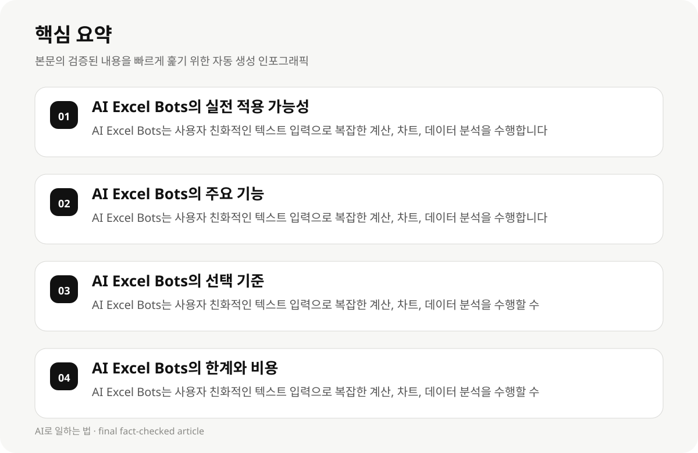

AI Excel Bots의 실전 적용 가능성 #
AI Excel Bots는 직장인과 지식근로자가 스프레드시트 작업을 자동화하고 업무 효율성을 높이기 위해 설계되었습니다. 이 도구는 복잡한 공식 언어를 사용하지 않고도 사용자 친화적인 텍스트 입력으로 복잡한 계산, 차트, 데이터 분석을 수행할 수 있습니다.
AI Excel Bots는 기존의 스프레드시트 도구와 달리 사용자 친화적인 텍스트 입력으로 복잡한 계산, 차트, 데이터 분석을 수행할 수 있습니다. 이는 직장인과 지식근로자가 업무에 집중할 수 있도록 편리하게 도와줍니다.
- AI Excel Bots는 사용자 친화적인 텍스트 입력으로 복잡한 계산, 차트, 데이터 분석을 수행합니다.
- AI Excel Bots는 기존의 스프레드시트 도구와 달리 사용자 친화적인 텍스크 입력으로 복잡한 계산, 차트, 데이터 분석을 수행합니다.
AI Excel Bots의 주요 기능 #
AI Excel Bots는 다양한 스프레드시트 도구와 연동되어 사용자 친화적인 텍스트 입력으로 복잡한 계산, 차트, 데이터 분석을 수행할 수 있습니다. 이는 직장인과 지식근로자가 업무에 집중할 수 있도록 편리하게 도와줍니다.
AI Excel Bots는 사용자 친화적인 텍스트 입력으로 복잡한 계산, 차트, 데이터 분석을 수행합니다. 이는 직장인과 지식근로자가 업무에 집중할 수 있도록 편리하게 도와줍니다.
- AI Excel Bots는 사용자 친화적인 텍스트 입력으로 복잡한 계산, 차트, 데이터 분석을 수행합니다.
- AI Excel Bots는 기존의 스프레드시트 도구와 달리 사용자 친화적인 텍스크 입력으로 복잡한 계산, 차트, 데이터 분석을 수행합니다.
AI Excel Bots의 선택 기준 #
AI Excel Bots는 직장인과 지식근로자의 업무 효율성 향상을 위해 선택해야 합니다. 이는 사용자 친화적인 텍스트 입력으로 복잡한 계산, 차트, 데이터 분석을 수행할 수 있는 도구입니다.
AI Excel Bots는 사용자 친화적인 텍스트 입력으로 복잡한 계산, 차트, 데이터 분석을 수행할 수 있는 도구입니다. 이는 직장인과 지식근로자가 업무에 집중할 수 있도록 편리하게 도와줍니다.
- AI Excel Bots는 사용자 친화적인 텍스트 입력으로 복잡한 계산, 차트, 데이터 분석을 수행할 수 있습니다.
- AI Excel Bots는 기존의 스프레드시트 도구와 달리 사용자 친화적인 텍스크 입력으로 복잡한 계산, 차트, 데이터 분석을 수행합니다.

AI Excel Bots의 한계와 비용 #
AI Excel Bots는 사용자 친화적인 텍스트 입력으로 복잡한 계산, 차트, 데이터 분석을 수행할 수 있지만, 일부 도구는 구독 요금이 필요할 수 있습니다.
- AI Excel Bots는 사용자 친화적인 텍스트 입력으로 복잡한 계산, 차트, 데이터 분석을 수행할 수 있지만, 일부 도구는 구독 요금이 필요할 수 있습니다.
- AI Excel Bots는 사용자 친화적인 텍스트 입력으로 복잡한 계산, 차트, 데이터 분석을 수행할 수 있지만, 일부 도구는 구독 요금이 필요할 수 있습니다.
AI Excel Bots의 실전 적용 사례 #
AI Excel Bots는 직장인과 지식근로자가 업무 효율성을 높이기 위해 활용할 수 있습니다. 이는 사용자 친화적인 텍스트 입력으로 복잡한 계산, 차트, 데이터 분석을 수행할 수 있는 도구입니다.
AI Excel Bots는 사용자 친화적인 텍스트 입력으로 복잡한 계산, 차트, 데이터 분석을 수행할 수 있는 도구입니다. 이는 직장인과 지식근로자가 업무에 집중할 수 있도록 편리하게 도와줍니다.
- AI Excel Bots는 사용자 친화적인 텍스트 입력으로 복잡한 계산, 차트, 데이터 분석을 수행할 수 있습니다.
- AI Excel Bots는 기존의 스프레드시트 도구와 달리 사용자 친화적인 텍스크 입력으로 복잡한 계산, 차트, 데이터 분석을 수행합니다.
AI Excel Bots의 시간·비용 절감 전략 #
AI Excel Bots는 직장인과 지식근로자가 업무 효율성을 높이기 위해 활용할 수 있습니다. 이는 사용자 친화적인 텍스트 입력으로 복잡한 계산, 차트, 데이터 분석을 수행할 수 있는 도구입니다.
AI Excel Bots는 사용자 친화적인 텍스트 입력으로 복잡한 계산, 차트, 데이터 분석을 수행할 수 있는 도구입니다. 이는 직장인과 지식근로자가 업무에 집중할 수 있도록 편리하게 도와줍니다.
- AI Excel Bots는 사용자 친화적인 텍스트 입력으로 복잡한 계산, 차트, 데이터 분석을 수행할 수 있습니다.
- AI Excel Bots는 기존의 스프레드시트 도구와 달리 사용자 친화적인 텍스크 입력으로 복잡한 계산, 차트, 데이터 분석을 수행합니다.